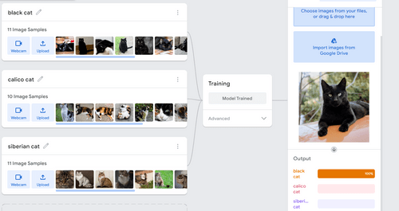

Natalia Andreu / July 18th, 2022
Elizebeth S Friedman was a writer and a cryptanalyst. She was one of the pioneers in U.S. cryptology. She would bust smugglers during the Prohibition that were using cyphers to communicate. She helped crack the Shakespearean Ciphers. She broke up a Nazi spy ring across South America in the 1940s. She was recruited by Colonel George Fabyan in 1916 to work on his estate, in which they exploited and solved enciphered messages. Later, her and her husband would move to Washington, DC in 1921 to work for the War Department. She worked for the US Navy as a cryptanalyst in 1923. She later worked for the US Treasury Department’s Bureau of Prohibition and Bureau of Customs during the Prohibition, then worked for the International Monetary Fund after WWII.
Natalia Andreu / July 19th, 2022
We built a machine that can tell the difference between a black cat, a calico cat, and a siberian cat.
(linked here: Which Cat is it? Teachable Machine )
I see artificial intelligence being used for medicine, where it can help identify and diagnose different diseases. However, this should still require human supervision just in case the AI makes an incorrect diagnosis.
Natalia Andreu / July 20th, 2022
We went to the dean's office and learned about how the department is responsible for recruitment, appointment, and retention of academic administrators, staff, and faculty. They oversee student life, student services, and on-campus activities. They are also responsible for fundraising. Technology is used so Syracuse University can stay relevant, and they sometimes use social media to promote the school. They also had to use digital platforms during the pandemic for remote learning.
Natalia Andreu / July 21st, 2022
This video below shows how to create a video tag in HTML. It's short but easy to understand.
Natalia Andreu / July 21st, 2022
Citizen science is scientific research conducted in part by amateur scientists. It is public participation in scientific research. Some things done are analyzing, experiments, collecting data, etc. It could be used to spread data more without having to worry about spending additional funding.

Natalia Andreu / July 22nd, 2022
Cybersecurity is the practice of protecting networks, devices, systems, sensitive information, and data from access that isn't authorized, criminal use, and digital attacks. An example of a threat is phishing (posing as legitimate institution to lure people into providing data), which teaches us that we have to be careful and alert of suspicious emails/attachments. Another example of a threat is insider threat, where a malicious threat to an organization comes from people within the organization. It's important to know about because we have to do background checks on people before giving them access to sensitive information. I think that there will always be hackers, adjusting to the changes that people in cybersecurity may bring. There will probably be better cybersecurity, but hacking attempts could be more frequent and more dangerous. They will probably both improve at what they do.